筆名:WuYue
☬簡介
Hi～I'm Wu Yue
I'm come from Taiwan～and i just a student.
¤Welcome to my channel~
I make some maple animation.
(我是一位很隨興的作者:D)
Hope everyone like it and enjoy it :)
☫為何取名為『舞月』呢?
存在於黑暗，也存在於光明
那無止境的黑，那無限的光
揮舞著黑與白的雙翼
光與暗的化身，乃吾『舞月』
☫製作楓動畫的契機?
一切從我還小時開始說起,小時候看到有人用楓之谷人物做出很帥的影片(MV或很帥的動作片),我第一次看到的時候才國中,但我並沒有特別深入了解怎麼去製作,直到我高二的時候,遇到貴人的教導,開始慢慢地踏入這個名為"楓動畫"的圈子裡。
2016
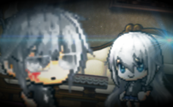 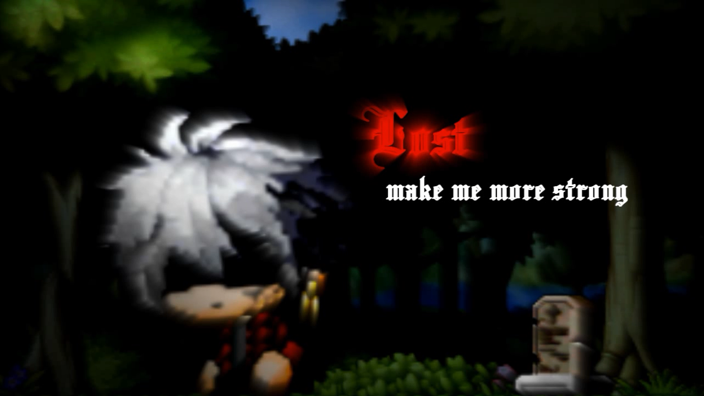 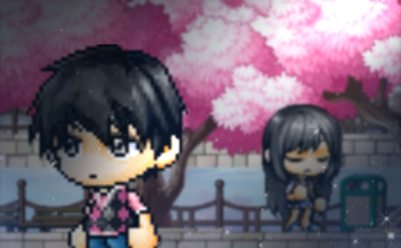 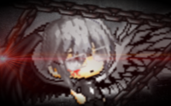 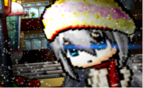2017
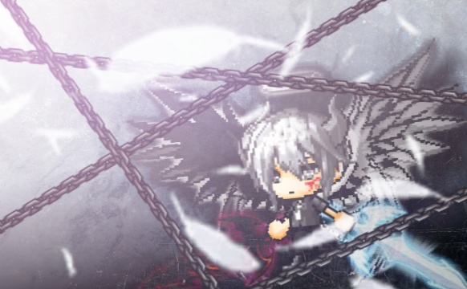 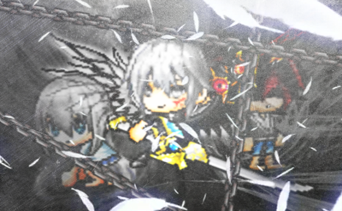
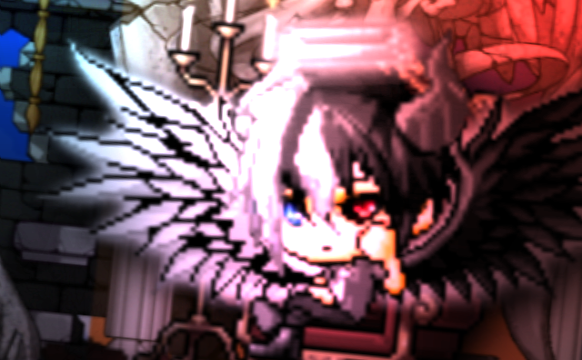
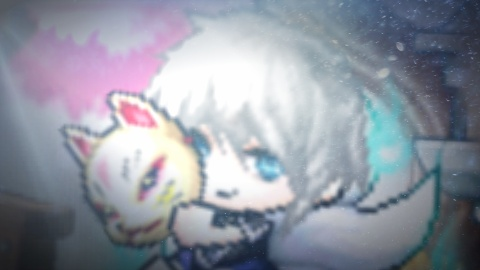
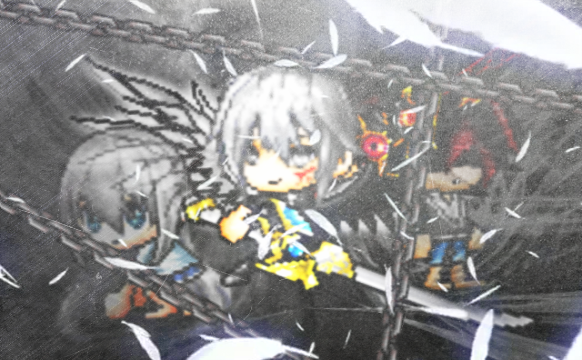
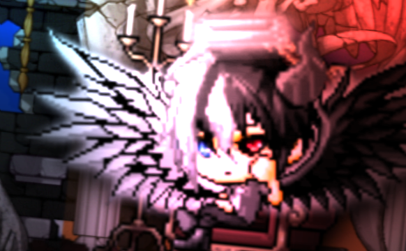
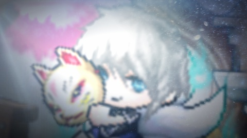
2018

 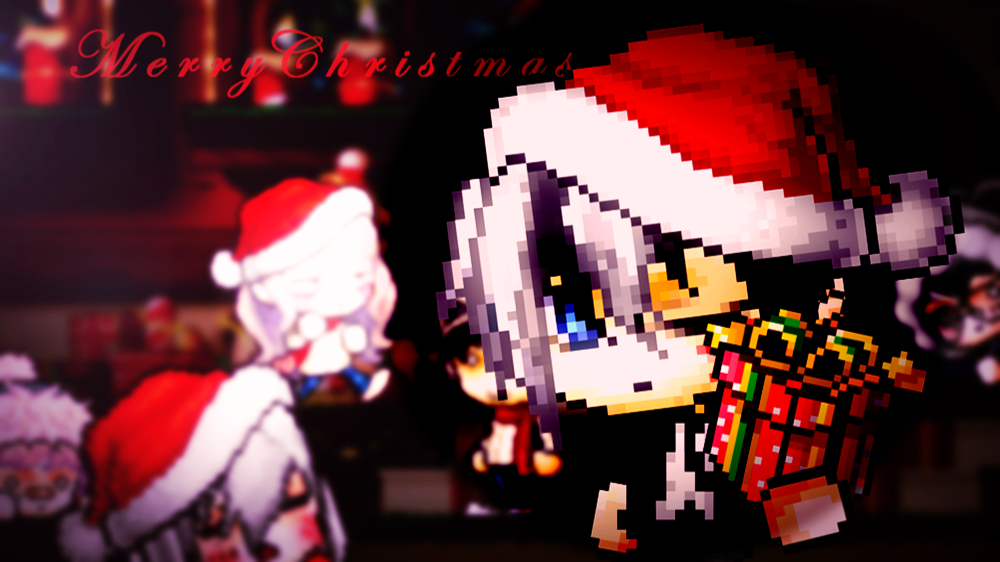
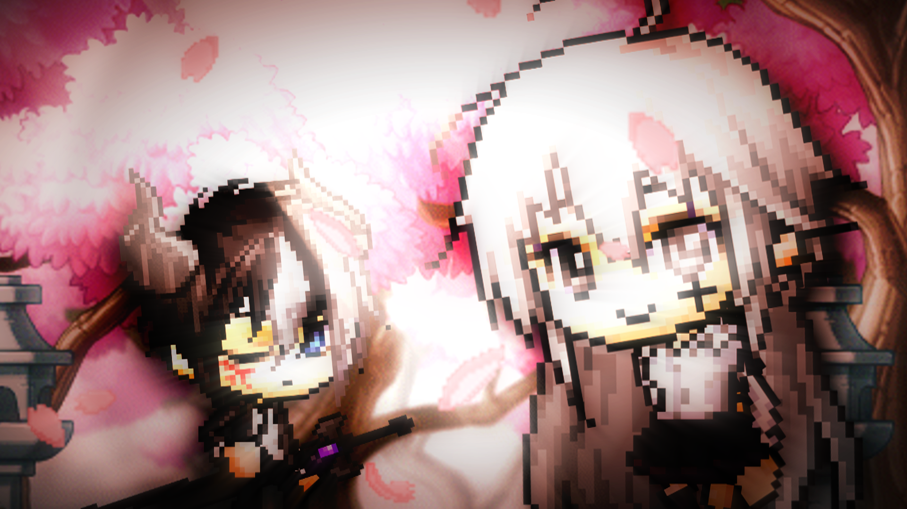
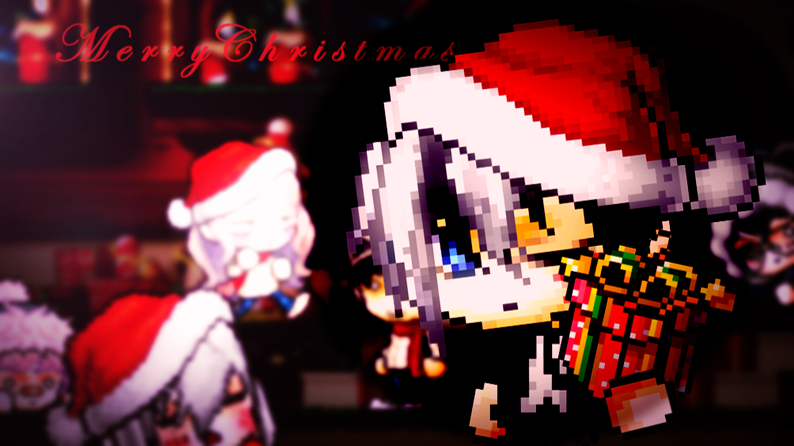
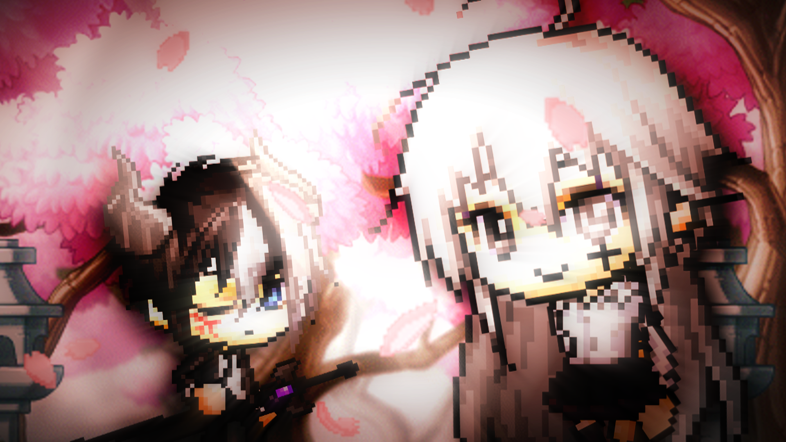
圖片設計簡介:
其實還有更早之前的圖片製作,最早貌似是2014年開始的,不過有點小小遺失,所以就沒有放上來,且又稀少,有特別再做圖片的時間點是從2016開始;進一步了解如何運用一些特效,就把圖片用的越來越好看了!!!

FightAnimation(practice)
因為以前看到帥氣的楓谷戰鬥場面動畫,自己也想要嘗試看看就做了一些練習影片~
CloseWindow
MMV系列
聆聽一些音樂得到的感觸,與自身生活上所遇到的人事物,或者看別人的影片、動漫、電影;簡而言之,就是一個腦洞開了就會去做的東西
♛自己舉辦的Collab
☬The Wolf Collab

☬If you Did Collab
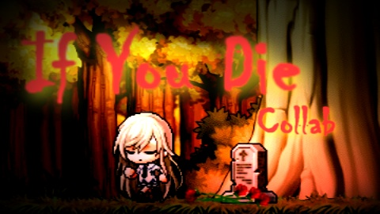☬總結
"楓動畫"就是楓之谷動畫,因為我本身不太會想劇情走向類的東西,所以沒有製作長片的習慣;所以呢大多都是做這種小小短片,或簡短劇情;在這圈子裏面呢,也有一些同好會聚集再一起製作一部影片,我們都會叫他"xxxx Collab",Collab其實就是Collection就是彙集的影視,而以上兩種類型的影片就是Collab最常出現的類型~
這種動畫被稱為Sprite動畫,他就是會有一個素材的檔案,素材量非常的龐大~網路上尋找都有機會找到,想要嘗試的人,稍微去搜尋一下,也可以製作出類似這樣的動畫影片,國外也有人有架構這種動畫的論壇,大多已這種像素動畫為主,網站裡也有很多可以使用的素材,前提是要是他們的會員並累積一點評價,才可以使用那些資源;總之我要學的東西還很多,做這些東西還可以培養一些影音剪輯的技能,我覺得非常的有趣~~:D!
其他影片欣賞
以下連結是我其餘的影片,我有把它弄成一個播放清單,給大家觀賞
【CP | sMMV】Collection【Fight】Collection